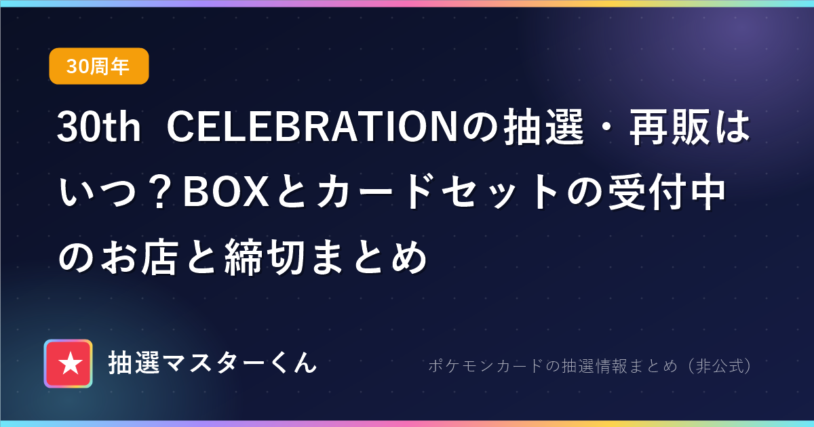

この記事の要点
- 「30th CELEBRATION」は2026年9月16日発売の30周年の拡張パック。1パック360円、BOXは20パック入りで7,200円（税込）
- 11月27日時点で、BOXはSHIBUYA TSUTAYA・ビックカメラなんば店など、カードセットはトレカステーション・TSUTAYA・ゲオなどで抽選が続いている
- 締切が近いのは11月27日（金）〜29日（日）。ゲオは11月30日（月）11:00から受付開始
- ポケモンセンターオンラインの第4回の追加抽選は12月ごろの予定（日程は未発表）
30th CELEBRATIONってどんな商品？
「30th CELEBRATION」は、ポケモンカードゲームの30周年を記念した拡張パックです。発売日は2026年9月16日。発売から2か月以上たった今も人気が続いていて、お店ごとの再販の抽選が毎週のように行われています。
このシリーズでよく抽選になっているのは、次の2つです。
- 30th CELEBRATION BOX：拡張パック20パック入りのBOX。1パック360円なので、1BOXは7,200円（税込）
- 30th CELEBRATION カードセット：3匹のポケモンを組み合わせたセットで全9種。お店の抽選では1セット1,200円（税込）で売られていて、9種まとめて売るお店もあります
カードセットの中身は、9種セットを2セット開けてみた体験記で写真つきで紹介しています。BOXとパックの違いが気になる人はポケカのBOXとは？も読んでみてください。
受付中のBOXの抽選（11月27日時点）
このサイトの抽選データから、30th CELEBRATION BOXの受付中・受付予定の抽選をまとめました。締切が近い順です。
- ふるいちトップブックス氷見店（オープン記念）：11/27（金）9時〜21時に店頭で抽選券を配布。11/28に発表・販売。ふるいちアプリ（本会員）と身分証が必要。シュリンクは開けて販売
- TSUTAYA 神明店（福井）：LivePocketで11/27（金）23:59まで。Vポイントカードとマイナンバーカードが必要
- SHIBUYA TSUTAYA（POKÉMON CARD LOUNGE）：CLOUD PASSで11/27（金）10:00〜11/29（日）23:59。1人1BOX。当選発表は12/8（火）18時以降、受け取りは12/15〜12/20に店頭で
- ビックカメラ なんば店：店頭で11/27（金）〜11/29（日）に受付。当選発表は12/4（金）、購入は12/5〜12/6
- ホビーサーチ（通販）：11/27（金）17時から商品ページで応募開始。締切は未掲載。1世帯1点まで
- Amazon（招待リクエスト）：商品ページの「招待をリクエストする」から。締切なしの招待制
店頭の抽選は、受付時間や対象の人がお店ごとに違います。応募の前に、必ずお店の告知で確かめてください。
受付中のカードセットの抽選（11月27日時点）
- 古本市場 野口店（兵庫）：LivePocketで11/28（土）22:00まで。9種それぞれ1,200円・各1回まで。購入は12/5〜12/7に店頭で
- TSUTAYA 積文館書店シュロアモール店（福岡）：LivePocketで11/29（日）21:45まで。9種それぞれ1,200円。購入は12/5〜12/6に店頭で
- トレカステーション（7店舗）：豊橋・とよかわ・荒尾・領家・中島新町・佐鳴台・蒲郡三谷から1店舗を選んでLivePocketで応募。11/29（日）23:59まで。9種セットで10,800円・1人1セット。当選発表は12/1予定
- トレカプラザ55通販：再入荷・キャンセル分の抽選。11/30（月）23:59まで。会員番号の入力が必要
- ゲオ：抽選販売専用サイトで11/30（月）11:00〜12/3（木）17:59。9種まとめての販売で、1人1点1回まで。レンタル機能付きPontaカードとゲオアプリの連携が必要
このほか、ふるいちトップブックス氷見店では「プレミアムデッキセット エーフィ・ブラッキー」の抽選も11/29まで受け付けています。最新の一覧は下のボタンから確認できます。
ポケモンセンターオンラインの追加抽選は12月ごろ
ポケモンセンターオンラインは、30th CELEBRATIONの第4回の追加抽選を12月ごろに行う予定と発表しています。対象はBOX・プレミアムデッキセット エーフィ・ブラッキー・FUTURISTIC BOXの3つです。日程は「決まりしだい案内」とされていて、記事の公開時点ではまだ出ていません。
ポケモンセンターオンラインの抽選は、プレイヤーズクラブでマイナンバーカードの本人認証を済ませた人向けの枠が中心になることが多いです。応募する予定の人は、認証を早めに済ませておくと安心です。日程が発表されたら、このサイトの抽選一覧にすぐ追加します。
このサイトのデータで見る傾向
このサイトで記録している30th CELEBRATIONの抽選を見ると、最近は次のような傾向があります。
- 店頭受け取りの抽選が中心：LivePocketやお店のアプリで応募して、指定の日にお店で受け取る形が多い。郵送はほとんどない
- 身分証の確認が当たり前：TSUTAYAやトレカステーションなど、LivePocketの抽選の多くで「登録した名前と身分証の名前が同じ」ことが求められる
- 店頭ではシュリンクを外して販売：店頭で受け取るBOXは、シュリンクを開けて渡すお店が多い
- 受付期間が短い：3日前後で締め切られる抽選がほとんど。週末（金〜日）に締切が集まりやすい
LivePocketで応募するときは、本名と正しい生年月日で登録しておかないと、当選しても買えないことがあります。登録情報を一度見直しておきましょう。
シュリンク付きで届く抽選（受付中）
このサイトのデータでシュリンク付きのBOXとされている受付中の抽選です（11月27日時点・30th以外の商品も含みます）。お店の方針は変わることがあるので、応募ページで確認してください。お店ごとの傾向はシュリンク付きで届く抽選のまとめで紹介しています。
- カーナベル：ハドウシーカー。まとめ買取を申し込んだ会員向け。締切 11/27（金）23:59
- SHIBUYA TSUTAYA（POKÉMON CARD LOUNGE）：30th CELEBRATION BOX。締切 11/29（日）23:59
- 福福トレカ 通販店：ロケット団の栄光。締切 11/29（日）23:59
- DMMマイカ：ハドウシーカー。締切 12/3（木）23:59
- ホビーサーチ：30th CELEBRATION BOX・ハドウシーカーなど。11/27（金）17時から（締切は未掲載）
- Amazon（招待リクエスト）：30th CELEBRATION BOX・ハドウシーカーなど。締切なし（招待制）
応募の前にチェックしたいこと
- 受け取りの日にお店に行けるか（店頭受け取りのみの抽選が多い）
- LivePocketやアプリの登録の名前が身分証と同じか
- 「1人1回」「1店舗だけ」など、重複応募の決まり（破ると無効になることがある）
- 当選発表日と購入期間（マイ抽選に追加しておくと、応募した抽選をまとめて管理できます）
あわせて、30周年のピカチュウのフィギュアの抽選（ポケモンセンターオンライン、11/30まで）はカードイラストフィギュアコレクションの記事にまとめています。
出典
- ポケモンセンターオンライン お知らせ（30th CELEBRATIONの追加抽選）
- SHIBUYA TSUTAYA 抽選販売の応募ページ（CLOUD PASS）
- ふるいち トップブックス氷見店 オープンのお知らせ
- トレカステーション カードセット抽選（LivePocket）
- TSUTAYA 積文館書店シュロアモール店 抽選（LivePocket）
- 古本市場 野口店 抽選（LivePocket）
- ゲオ 抽選販売のお知らせ
当サイトは非公式のファンサイトです。価格・日程などは記事公開時点の情報なので、最新の情報は公式サイトや各販売店でご確認ください。